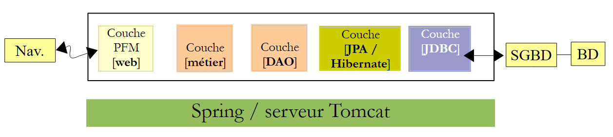
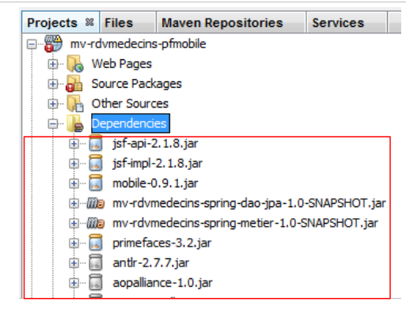
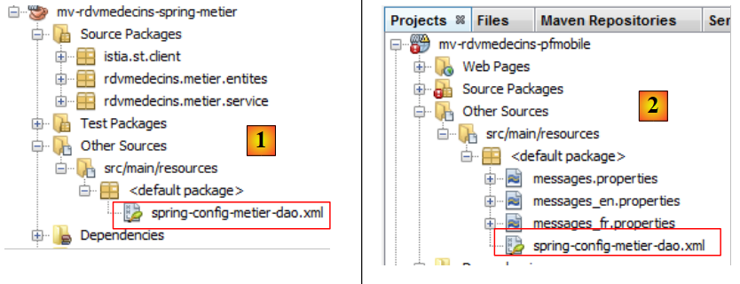
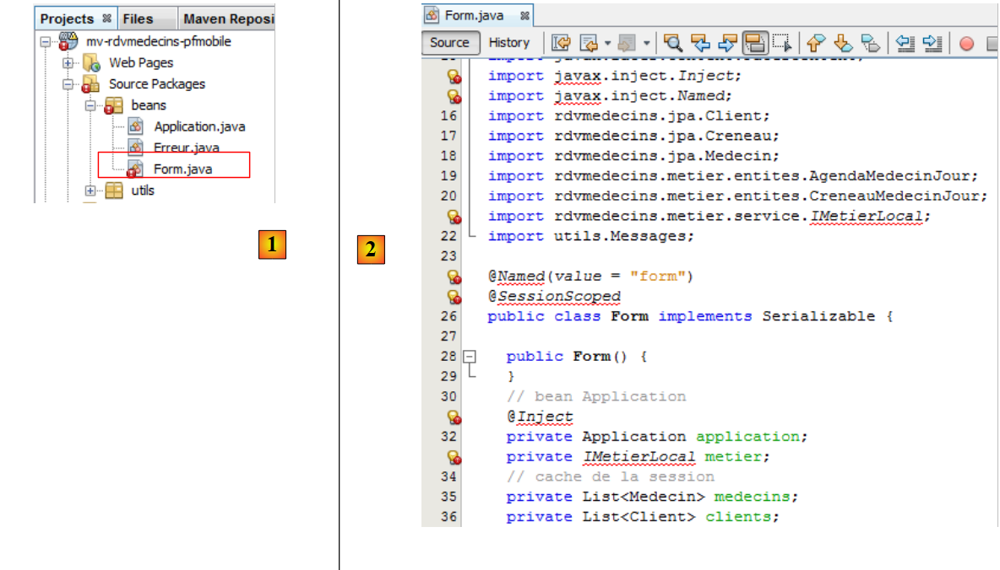
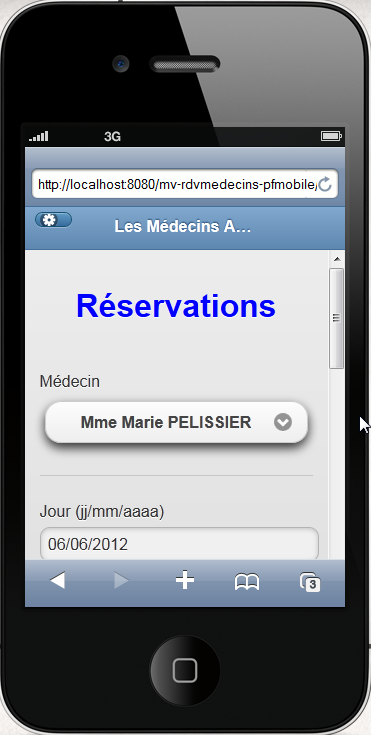
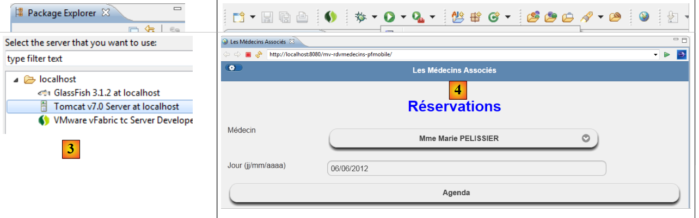
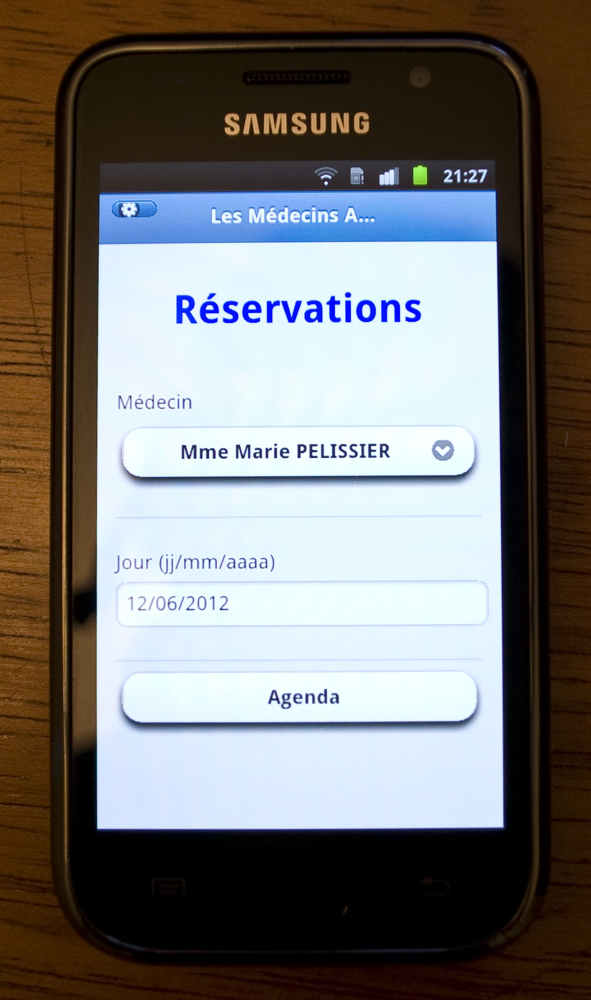
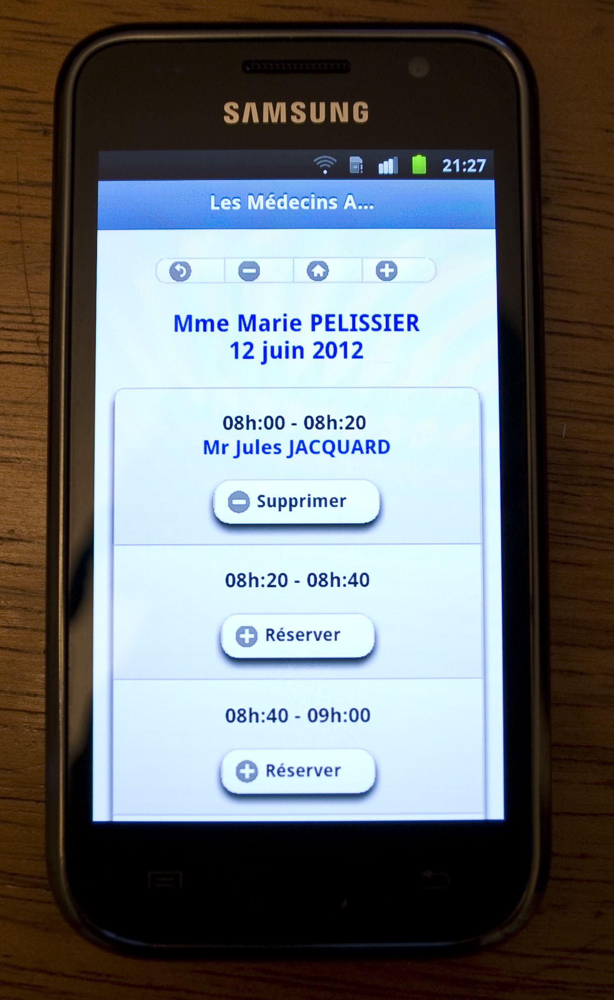

10. Example Application-06: rdvmedecins-pfm-spring
10.1. Porting
We will now port the previous application to a Spring/Tomcat environment:
 |
We will rely on two applications that have already been written. We will use:
- the [DAO] and [JPA] layers from version 02 JSF / Spring,
- the [web] / Primefaces Mobile layer from version 05 PFM / EJB,
- the Spring configuration files from version 02
Here, we are performing a task similar to the one done to port the JSF2 / EJB / Glassfish application to a JSF2 / Spring Tomcat environment. Therefore, we will provide fewer explanations. If necessary, the reader can refer to that port.
We are placing all the projects necessary for the porting into a new folder [rdvmedecins-pfm-spring] [1]:
 |
- [mv-rdvmedecins-spring-dao-jpa]: the [DAO] and [JPA] layers of the JSF/Spring version 02,
- [mv-rdvmedecins-spring-metier]: the [business] layer of version 02 JSF / Spring,
- [mv-rdvmedecins-pfmobile]: the [web] layer of the PrimeFaces Mobile / EJB version 05,
- in [2], we load them into NetBeans,
- in [3], the web project dependencies are no longer correct:
- the dependencies on the [DAO], [JPA], and [business] layers must be changed to now target the Spring projects;
- The GlassFish server provided the JSF libraries. This is no longer the case with the Tomcat server. They must therefore be added to the dependencies.
The [web] project evolves as follows:
 |
The [pom.xml] file for the [web] layer now has the following dependencies:
<dependencies>
<dependency>
<groupId>org.primefaces</groupId>
<artifactId>primefaces</artifactId>
<version>3.2</version>
<type>jar</type>
</dependency>
<dependency>
<groupId>org.primefaces</groupId>
<artifactId>mobile</artifactId>
<version>0.9.1</version>
<type>jar</type>
</dependency>
<dependency>
<groupId>com.sun.faces</groupId>
<artifactId>jsf-api</artifactId>
<version>2.1.8</version>
</dependency>
<dependency>
<groupId>com.sun.faces</groupId>
<artifactId>jsf-impl</artifactId>
<version>2.1.8</version>
</dependency>
<dependency>
<groupId>${project.groupId}</groupId>
<artifactId>mv-rdvmedecins-spring-dao-jpa</artifactId>
<version>${project.version}</version>
</dependency>
<dependency>
<groupId>${project.groupId}</groupId>
<artifactId>mv-rdvmedecins-spring-metier</artifactId>
<version>${project.version}</version>
</dependency>
</dependencies>
Errors appear. They are caused by the EJB references in the [web] layer. Let’s first examine the [Application] bean:
 |
We remove all the lines causing errors due to missing packages, rename the [IMetierLocal] interface to [IMetier] (this is its name in the Spring [business] layer), and use Spring to instantiate it:
package beans;
import java.util.ArrayList;
import java.util.List;
import org.springframework.context.ApplicationContext;
import org.springframework.context.support.ClassPathXmlApplicationContext;
import rdvmedecins.business.service.IMetier;
public class Application {
// business layer
private IMetier business;
// errors
private List<Error> errors = new ArrayList<Error>();
private Boolean error = false;
public Application() {
try {
// instantiate the [business] layer
ApplicationContext ctx = new ClassPathXmlApplicationContext("spring-config-business-dao.xml");
business = (IMetier) ctx.getBean("business");
} catch (Throwable th) {
// log the error
error = true;
errors.add(new Error(th.getClass().getName(), th.getMessage()));
while (th.getCause() != null) {
th = th.getCause();
errors.add(new Error(th.getClass().getName(), th.getMessage()));
}
return;
}
}
// getters
public Boolean getError() {
return error;
}
public List<Error> getErrors() {
return errors;
}
public IBusiness getBusiness() {
return business;
}
}
- lines 20-21: instantiation of the [business] layer from the Spring configuration file. This is the file used by the [business] layer [1]. We copy it into the web project [2]:
 |
- lines 22-31: we handle any exceptions and store their stack trace in the field on line 14.
With that done, the [Application] bean no longer has any errors. Let’s now look at the [Form] bean [1], [2]:
 |
|

We remove all the erroneous lines (imports and annotations) due to missing packages and rename the [ImetierLocal] interface to [IMetier]. This is sufficient to eliminate all errors [3].
Additionally, we need to add the getter and setter for the field
// Application bean
private Application application;
Some of the annotations removed from the [Application] and [Form] beans declared the classes as beans with a specific scope. Now, this configuration is done in the following [faces-config.xml] file [4]:
<?xml version='1.0' encoding='UTF-8'?>
<!-- =========== FULL CONFIGURATION FILE ================================== -->
<faces-config version="2.0"
xmlns="http://java.sun.com/xml/ns/javaee"
xmlns:xsi="http://www.w3.org/2001/XMLSchema-instance"
xsi:schemaLocation="http://java.sun.com/xml/ns/javaee http://java.sun.com/xml/ns/javaee/web-facesconfig_2_0.xsd">
<application>
<!-- the message file -->
<resource-bundle>
<base-name>
messages
</base-name>
<var>msg</var>
</resource-bundle>
<message-bundle>messages</message-bundle>
<default-render-kit-id>PRIMEFACES_MOBILE</default-render-kit-id>
</application>
<!-- the applicationBean bean -->
<managed-bean>
<managed-bean-name>applicationBean</managed-bean-name>
<managed-bean-class>beans.Application</managed-bean-class>
<managed-bean-scope>application</managed-bean-scope>
</managed-bean>
<!-- the bean form -->
<managed-bean>
<managed-bean-name>form</managed-bean-name>
<managed-bean-class>beans.Form</managed-bean-class>
<managed-bean-scope>session</managed-bean-scope>
<managed-property>
<property-name>application</property-name>
<value>#{applicationBean}</value>
</managed-property>
</managed-bean>
</faces-config>
The port is complete. We can try running the web application.
 |
We leave it to the reader to test this new application. We can improve it slightly to handle the case where the initialization of the [Application] bean failed. We know that in this case, the following fields have been initialized:
// errors
private List<Error> errors = new ArrayList<Error>();
private Boolean error = false;
This case can be handled in the [Form] bean’s init method:
@PostConstruct
private void init() {
// Did initialization succeed?
if (application.getError()) {
// retrieve the list of errors
errors = application.getErrors();
// Display the error view
setForms(false, false, true);
}
// cache doctors and clients
...
}
- line 5: if the [Application] bean failed to initialize,
- line 7: retrieve the list of errors,
- line 9: and display the error page.
Thus, if we stop the MySQL DBMS and restart the application, we now see the following page:

10.2. Conclusion
Porting the PrimeFaces Mobile/EJB/GlassFish application to a PrimeFaces Mobile/Spring/Tomcat environment proved to be straightforward. The memory leak issue reported in the study of the JSF/Spring/Tomcat application (Section 4.3.5) remains. It will be resolved in the same manner.
10.3. Tests with Eclipse
We import the Maven projects into Eclipse [1]:
 |
We run the web project [2].
 |
We select the Tomcat server [3]. The application’s home page is then displayed in Eclipse’s internal browser [4].
10.4. Testing on a mobile device
To test the application on a mobile device, follow the steps outlined in section 8.5.6. Here are some screenshots of the application:
 |  |
 |